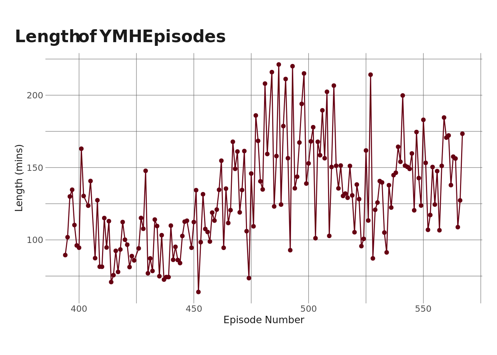
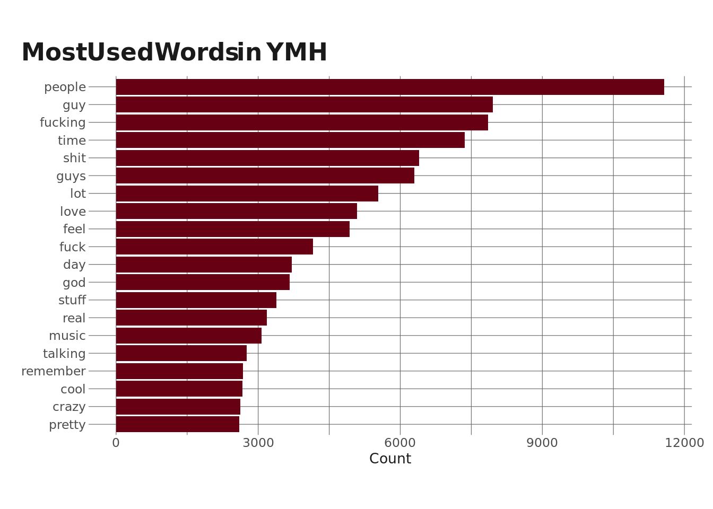
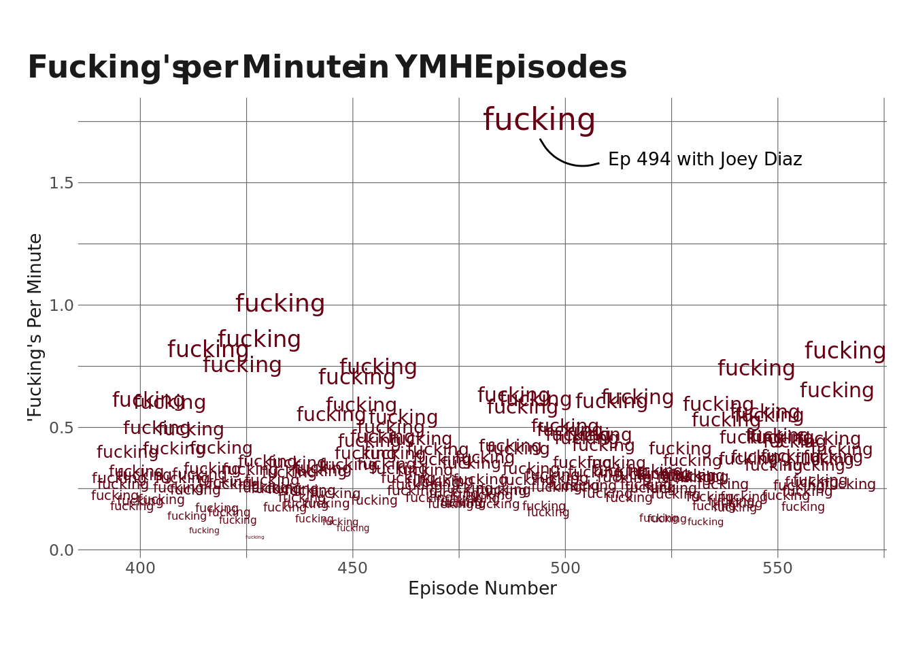
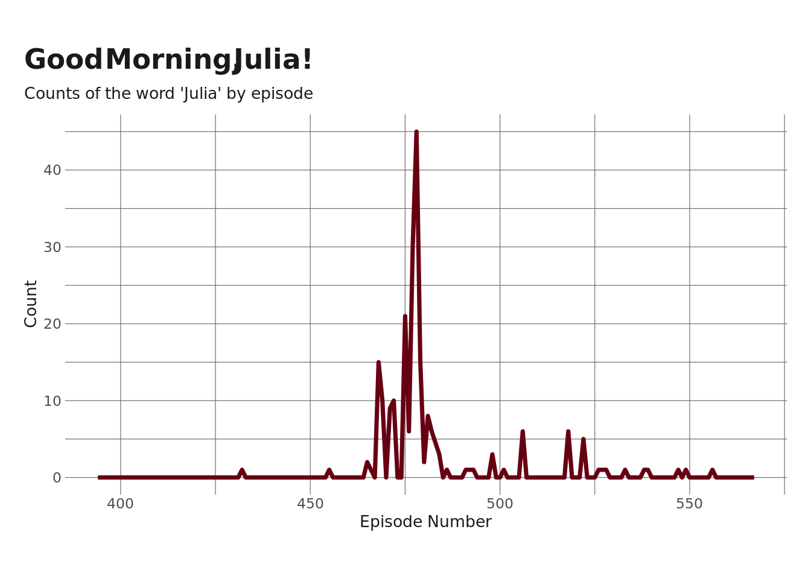
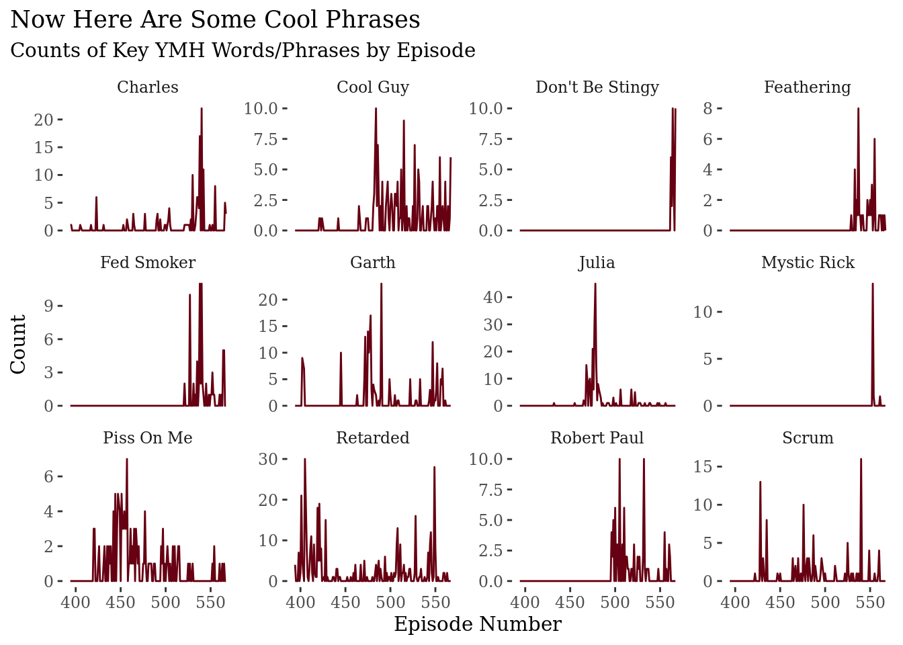
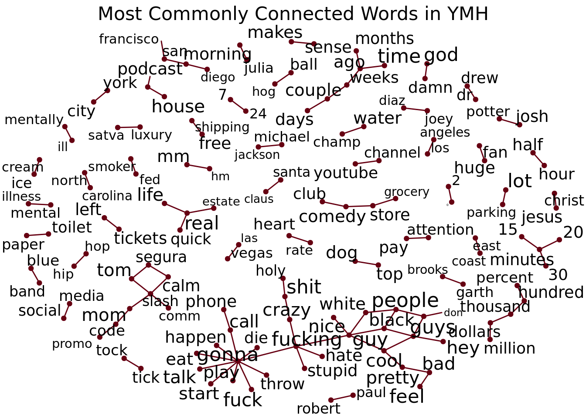

library(tidyverse)
library(eemisc)
library(lubridate)
library(tidytext)
library(reactable)
library(tidylo)
library(igraph)
library(ggraph)
theme_set(theme_ee())
herm <- harrypotter::hp(n = 1, option = "HermioneGranger")
opts <- options(
ggplot2.discrete.fill = list(
harrypotter::hp(n = 3, option = "HermioneGranger"),
harrypotter::hp(n = 5, option = "Always")
)
)
ymh <- read_csv(here::here("data/ymh_trans.csv")) %>%
filter(ep_num > 370)
ymh_one_obs <- ymh %>%
group_by(title, ep_num) %>%
summarize(text = str_c(text, collapse = " ") %>%
str_to_lower()) %>%
ungroup()What’s going on, mommies? I’ve been a big fan of Your Mom’s House for a long time now, and find myself constantly refreshing my podcast feed on Wednesdays waiting for those sweet sweet updates. I’ve also been getting more and more into text analysis, and so I figured why not combine the two and analyze the transcripts from YMH.
A few months ago, I wrote a blog post describing how to pull transcripts from each video in a Youtube playlist (6/22/22 update: this link is broken now – whoops!). I’m not going to go over that part again, so if you’re curious about how to get the data, check out that post.
A couple notes before getting into the analysis:
- The episode transcripts are automatically created by Youtube’s speech-to-text model. It’s usually really good, but it does make some mistakes & obviously has trouble with proper nouns (e.g. TikTok).
- Another feature of the fact that the transcripts are generated automatically is that the speaker of each phrase isn’t tagged. That is, there are no indications whether it’s Tom, Christina, or someone else speaking any given line.
- I’m only looking at the episodes available on Youtube, and the most recent episode I’m including is the one with Fortune Feimster.
- I’m going to include my code, but I’m not going to explain step-by-step what each code chunk does here.
With that out of the way, let’s move on and make sure to follow proto.
Setup
General Exploration
There are a total of 169 episodes, beginning with 394 and ending with 567
Next, let’s take a look at the length of the episodes here.
ep_lengths <- ymh %>%
group_by(ep_num) %>%
summarize(mins = (max(start) + max(duration))/60) %>%
ungroup()
ep_lengths %>%
ggplot(aes(x = ep_num, y = mins)) +
geom_line(color = herm) +
geom_point(color = herm) +
labs(
title = "Length of YMH Episodes",
x = "Episode Number",
y = "Length (mins)"
)
It looks like episodes have tended to get longer up until about episode ~510 or so, and then the length dropped a bit. This might have been due to COVID and the fact that there was a stretch there where they didn’t have guests (which made the episodes shorter).
Next, let’s take a look at the most common guests on the show.
ymh %>%
distinct(title) %>%
mutate(guest = str_remove_all(title, "^.* w/ ") %>%
str_remove_all(" - Ep. \\d+| - REUPLOADED")) %>%
filter(str_detect(guest, "Your Mom", negate = TRUE)) %>%
mutate(guest = str_replace_all(guest, "\\&", ",")) %>%
separate_rows(guest, sep = ",") %>%
mutate(guest = str_trim(guest)) %>%
count(guest, name = "num_appearances", sort = TRUE) %>%
reactable()Note that this only counts guests named in the title of the episode and won’t capture people like Josh Potter, Top Dog & Charo, etc. Dr. Drew is also probably under-counted here, since he makes a lot of cameos via phone call and whatnot (like when Tim and Christine called him up to ask about corn cob sanitation recently). The big takeaway here, though, is that there really aren’t that many repeat guests.
Most Common Words
Cool. Let’s shift gears here, now, and start to dig into the actual transcripts. Once again, these don’t delineate who is speaking, but there is still a lot of data here. I’m going to start by looking at the most commonly-used words across all of the episodes. In doing this, I’m also going to filter out stop words – things like “the,” “at,” “I’m”, etc.
ymh_words <- ymh_one_obs %>%
unnest_tokens(word, text)
ymh_words <- ymh_words %>%
anti_join(stop_words) %>%
filter(!(word %in% c("yeah", "gonna", "uh", "hey", "cuz")))
ymh_words %>%
count(word) %>%
slice_max(order_by = n, n = 20) %>%
ggplot(aes(x = n, y = fct_reorder(word, n))) +
geom_col(fill = herm) +
labs(
title = "Most Used Words in YMH",
y = NULL,
x = "Count"
)
Ok, so, there’s a lot we could unpack here. But what stands out to me is that “fucking” is the 3rd most commonly used word in the podcast, right after “people” and “guy.” This isn’t surprising to me, but I want to dig into it a little more on an episode-by-episode basis.
I’m going to take a look at how many times the word “fucking” appears per episode. Actually, I’m going to look at “fucking”s per minute as a way to control for episode length.
ymh_words %>%
filter(word == "fucking") %>%
count(ep_num, word) %>%
left_join(ep_lengths, by = "ep_num") %>%
mutate(fpm = n/mins) %>%
ggplot(aes(x = ep_num, y = fpm)) +
geom_text(aes(size = fpm), label = "fucking", show.legend = FALSE, color = herm) +
annotate("text", x = 510, y = 1.6, label = "Ep 494 with Joey Diaz", hjust = 0, size = 3.5) +
annotate("curve", x = 494, xend = 508, y = 1.68, yend = 1.58, curvature = .4) +
labs(
x = "Episode Number",
y = "'Fucking's Per Minute",
title = "Fucking's per Minute in YMH Episodes"
)
It’s maybe no surprise that Episode 494 with Joey Diaz had far and away the highest rate of fucking’s-per-minute at 1.76, which is about .76 higher than the next highest (1.008 in Ep 433 with Bill Burr).
YMH Vocabulary Over Time
Next, I want to look at the evolution of some of the more popular mommy-isms over time – the memes and vocabulary that define the show. I’m going to start by tracking the use of the word “Julia” – as in “good morning, julia!” – over time, since that’s still my favorite clip from the show.
ymh_words %>%
filter(word == "julia") %>%
count(ep_num, word) %>%
left_join(x = tibble(ep_num = unique(ep_lengths$ep_num), word = "julia"),
y = ., by = c("ep_num", "word")) %>%
mutate(n = replace_na(n, 0)) %>%
ggplot(aes(x = ep_num, y = n)) +
geom_line(color = herm, size = 1.25) +
labs(
y = "Count",
x = "Episode Number",
title = "Good Morning, Julia!",
subtitle = "Counts of the word 'Julia' by episode"
)
So, we see a pretty clear trend here – the popularity of “julia” starts up right around episode ~470ish, stays high for a few episodes, and then peaks at episode ~477 (give or take), which I assume is the episode where Tony and Catherine actually interview Julia.
There are tons of other words and phrases I could make this same graph for – “four strokes,” “let me eat ya,” etc. – but I’m going to pick a handful and write a little function that’ll extract those from the transcript and then make a faceted graph similar to the above.
isolate_phrases <- function(phrase) {
nwords <- str_count(phrase, " ") + 1
token <- if (nwords == 1) {
"words"
} else {
"ngrams"
}
tmp <- if (token == "ngrams") {
ymh_one_obs %>%
unnest_tokens(output = words, input = text, token = token, n = nwords)
} else {
ymh_one_obs %>%
unnest_tokens(output = words, input = text, token = token)
}
tmp %>%
filter(words == phrase)
}
phrases <- c("julia", "charles", "robert paul", "retarded", "garth", "cool guy", "fed smoker", "feathering", "scrum", "mystic rick", "don't be stingy", "piss on me")
ymh_phrase_list <- map(phrases, isolate_phrases)
phrase_grid <- expand_grid(unique(ep_lengths$ep_num), phrases) %>%
rename(ep_num = 1)
ymh_phrase_df <- ymh_phrase_list %>%
bind_rows() %>%
count(ep_num, words) %>%
left_join(x = phrase_grid, y = ., by = c("ep_num", "phrases" = "words")) %>%
mutate(n = replace_na(n, 0))
ymh_phrase_df %>%
mutate(phrases = str_to_title(phrases)) %>%
ggplot(aes(x = ep_num, y = n)) +
geom_line(color = herm) +
facet_wrap(~phrases, scales = "free_y") +
labs(
y = "Count",
x = "Episode Number",
title = "Now Here Are Some Cool Phrases",
subtitle = "Counts of Key YMH Words/Phrases by Episode"
) +
ggthemes::theme_tufte() +
theme(
plot.title.position = "plot"
)
One thing to note here is that the y-axis scale is different for each facet, so it’s not really easy to make comparisons across plots. But if I keep them on the same scale, it makes it hard to see movement in anything other than the “Julia” plot. Overall, though, I think this does a pretty nice job at tracking the lifespan of some of the common memes/jokes that run through the show.
Popular Words Across Groups of Episodes
One limitation of the plots above is that I just chose 12 words/phrases that I think exemplify the show and tracked their usage over time. Like I said, there are tons of other phrases I could have chosen instead, and so the analysis is kinda limited by my personal choice.
One way to let the data drive the analysis is to look at “definitive” words over time. The way I’ll do this is – I’ll classify every 5 episodes as a group (yes this is arbitrary, but it seems reasonable enough). Then, I’ll calculate the weighted (log) odds of a specific word showing up in that group versus any other group. Then I’ll choose the words with the highest odds per group. These will be the “definitive” words for that group of episodes.
ymh_groups <- tibble(
ep_num = unique(ep_lengths$ep_num),
group = 1:length(unique(ep_lengths$ep_num)) %/% 5
) %>%
group_by(group) %>%
mutate(max = max(ep_num),
min = min(ep_num),
group_name = glue::glue("Ep { min } - Ep { max }")) %>%
ungroup() %>%
select(-c(group, min, max))
set.seed(0408)
ymh_lo <- ymh_words %>%
left_join(x = .,
y = ymh_groups,
by = "ep_num") %>%
count(group_name, word) %>%
filter(n > 6 & (str_length(word) > 2) & !(word %in% c("xiy", "pql", "8ww", "hmh", "music"))) %>%
bind_log_odds(set = group_name, feature = word, n = n) %>%
group_by(group_name) %>%
slice_max(order_by = log_odds_weighted, n = 3, with_ties = FALSE)
ymh_lo %>%
ungroup() %>%
mutate(header = rep(c("Most Distinctive", "2nd Most Distinctive", "3rd Most Distinctive"),
length(unique(ymh_lo$group_name)))) %>%
select(-c(n, log_odds_weighted)) %>%
rename(`Ep Group` = group_name) %>%
pivot_wider(names_from = header, values_from = word) %>%
reactable()Let’s unpack this a little bit. I’ll start at the end. The three most definitive words of Eps 563-567 are “stingy” (as in “don’t be stingy, Mark”), “quarantine” (as in the thing everyone is talking about), and “fed” (as in “fed smoker” – presumably this is driven by the interview with fed smoker’s nemesis). Before that, in Eps 558-562, we have “jamie” (as in Jamie-Lynn Sigler), “jewish” (the dude with the cool mouse pads), and, again, “quarantine.” This analysis gives us a loose idea about what some of the key themes of these episodes are.
Connections between Words
The last thing I’m going to do is look at connections between words. To do this, I’m going to make a network diagram. The basic idea here is that this analysis will visualize words that are commonly used together by drawing links between them. I’m also going to change the size of the word to indicate how often the word gets used (with bigger words being used more).
One other note – like in previous steps here, I’m filtering out stop words (e.g. “the”, “it”, etc). I also noticed when I first tried this that I got a lot of phrases from Saatva reads – lots of pairings with the word “mattress” and “delivery,” so I’m filtering those out as well.
filter_words <- c("music", "yeah", "uh", "huh", "hmm", "mattress", "delivery")
ymh_bigrams <- ymh_one_obs %>%
unnest_tokens(bigram, text, token = "ngrams", n = 2) %>%
separate(bigram, c("word1", "word2")) %>%
filter(!is.element(word1, stop_words$word) &
!is.element(word2, stop_words$word) &
!is.na(word1) &
!is.na(word2) &
!is.element(word1, filter_words) &
!is.element(word2, filter_words) &
word1 != word2) %>%
count(word1, word2, sort = TRUE)
ymh_bigrams_small <- ymh_bigrams %>%
slice_max(order_by = n, n = 100)
ymh_verts <- ymh_one_obs %>%
unnest_tokens(word, text) %>%
count(word) %>%
mutate(n = log(n)) %>%
filter(is.element(word, ymh_bigrams_small$word1) |
is.element(word, ymh_bigrams_small$word2))
ymh_net <- graph_from_data_frame(ymh_bigrams_small, vertices = ymh_verts)
set.seed(0409)
ymh_net %>%
ggraph(layout = "igraph", algorithm = "fr") +
geom_edge_link(aes(size = n), color = herm) +
geom_node_point(color = herm) +
geom_node_text(aes(label = name, size = n), repel = TRUE, segment.color = herm, label.padding = .1, box.padding = .1) +
theme_void() +
labs(title = "Most Commonly Connected Words in YMH") +
theme(legend.position = "none",
plot.title = element_text(hjust = .5, size = 16))
The way to read this graph is to look for words that are connected (note that the direction doesn’t mean anything here – it’s just random). So, the words “tick” and “tock” (TikTok) show up a lot together, as do “toilet” and “paper” (from Tushy reads). Over on the left side, we see more of a wheel-shaped pattern with “gonna” in the middle, which is linked to a bunch of other words – “gonna die,” “gonna throw” (up), “gonna call,” etc. There’s also a little network toward the bottom left where we see connections between guy, guys, black, white, cool, and nice (black guys, cool guys, white guy, etc). A few other standouts to me are “water champ,” “mentall ill”, “robert paul,” and, of course “morning julia.”
That’s it for now – keep it high and tight, Jeans.
Reuse
Citation
BibTeX citation:
@online{ekholm2020,
author = {Eric Ekholm},
title = {Your {Mom’s} {House} {Analysis}},
date = {2020-09-20},
url = {https://www.ericekholm.com/posts/your-moms-house-analysis},
langid = {en}
}
For attribution, please cite this work as:
Eric Ekholm. 2020. “Your Mom’s House Analysis.” September
20, 2020. https://www.ericekholm.com/posts/your-moms-house-analysis.